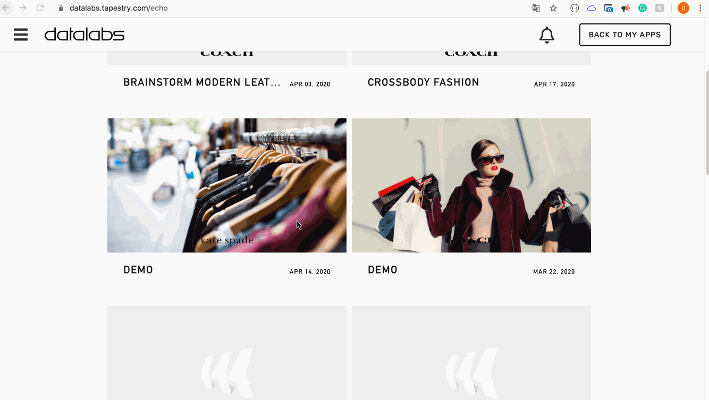

Corporate Work — 05 / Web
Coach fashion designer tool
A digital board that replaced a decade of physical mood boards for Coach's fashion product designers, built with the Datalabs team at Tapestry.

The Problem
A decade of physical boards, no digital record
Coach's fashion product designers had organized research on physical pin-up boards for years — it was core to how they worked, but it meant ideas lived in one room, nothing was documented, and nothing could be shared or found again once the board came down. Tapestry's Datalabs team brought us in to find out whether that process could move online without losing what made it work.
The Approach
Projects and boards, not folders and files
Twelve weeks of research — card sorting, HMW workshops, workflow mapping — surfaced the mental model designers already used: stacks of boards grouped into projects. I carried that model into the MVP, prototyping and testing with two other designers so creators, collaborators, and reviewers each got the right level of access without having to learn a new tool.